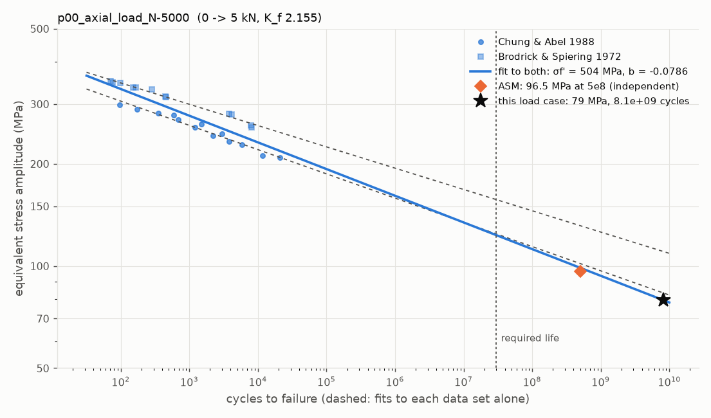
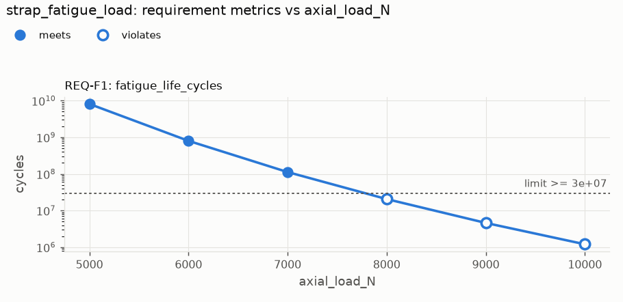
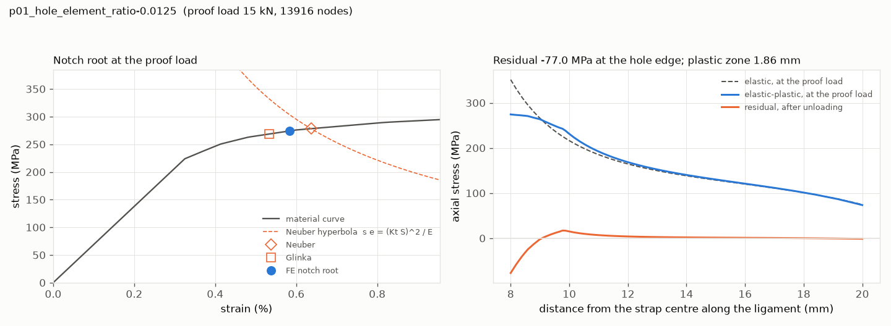

Cable hole in a strap, CAD to FEA
The question
A 6061 aluminium strap, 40 mm wide and 4 mm thick, carries a 5 kN pull, and a cable needs to pass through a hole drilled in the middle. How big can the hole be before the stress at its edge goes over a 120 MPa fatigue allowable?
The answer
About 16.7 mm. A 16 mm hole passes at 117 MPa and an 18 mm hole fails at 125 MPa. I'd call out 16 mm, or 14 mm if there's any doubt about the allowable, which gives 8 % margin.
Why it matters
A hole concentrates stress. The material beside it carries the load the missing material would have carried, and at the two sides of the hole the stress is two to three times the average. That's where a fatigue crack starts, so the size of a hole is a real design decision.
It also makes a useful contrast with the cantilever in study 1. The peak at a smooth hole edge is a real number that settles down as the mesh gets finer, while the peak at a sharp corner never settles. Telling those two apart is a big part of doing a stress check well.
The model
- Part
- A flat strap, 160 × 40 × 4 mm, with a round hole in the centre. Hole sizes from 6 to 18 mm are tried.
- Material
- 6061-T6 aluminium, linear elastic: Young's modulus 68.9 GPa, Poisson's ratio 0.33, yield 276 MPa.
- Load
- 5 kN pulling along the strap, applied evenly at the end, at least 70 mm from the hole.
- Symmetry
- The strap is symmetric about both centre lines, so only a quarter is modelled.
- Mesh
- Quadratic triangles, 4 mm far from the hole and as small as 0.125 mm at its edge.
- Analysis
- Linear static, plane stress (the strap is thin, so stress through the thickness is taken as zero), in CalculiX 2.22.
- What's measured
- The peak stress at the hole edge, and the stress concentration factor: that peak divided by the average stress in the section beside the hole.
The case file: recorded assumptions, limits and inputs
This is the study's own record, written before the run and saved with it, in the shorthand of the case file.
6061-T6 aluminium strap, 160 x 40 x 4 mm, 5 kN axial service load, central cable hole swept from 6 to 18 mm. Finds the largest hole that keeps the peak hole-edge stress within 120 MPa.
Assumptions, and how each is checked
- Linear elastic, isotropic 6061-T6 (E = 68.9 GPa, nu = 0.33); checked: peak stress below the 276 MPa yield strength.
- Plane stress; through-thickness variation at the hole neglected.
- Uniform end traction 70 mm or more from the hole; checked: the stress there is uniform.
- Hole smooth and central (quarter symmetry).
- The 120 MPa allowable is synthetic.
Limits
- Synthetic geometry, load, and allowable.
- Peterson's Kt is a model-form reference.
- No physical test data.
Inputs
| Input | Value |
|---|---|
| length_mm | 160 |
| width_mm | 40 |
| thickness_mm | 4 |
| hole_diameter_mm | 10 |
| axial_load_N | 5000 |
| youngs_modulus_MPa | 68900 |
| poisson_ratio | 0.33 |
| yield_strength_MPa | 276 |
| hole_element_size_mm | 0.25 |
| hole_element_ratio | 0.025 |
| far_element_size_mm | 4 |
How it works
The whole chain is scripted. CadQuery builds the strap and writes a STEP file, the neutral CAD format. Gmsh meshes it with small elements around the hole, and CalculiX solves it. Trying a new hole size means changing one number, so the seven hole sizes are one command.


How I checked it
- Against the handbook. The stress concentration factor converges to 2.436, within 0.6 % of the value in Peterson's handbook. I'd written down what I expected before running, and all seven hole sizes came in within about 0.6 % of those numbers.
- Against an exact solution. A hole in a very wide plate has an exact answer: the peak is three times the remote stress. Run through the same pipeline, that case comes out within 0.1 %. It now runs as an automatic test.
- Equilibrium. The reactions balance the load, and the stress across the section next to the hole adds up to the full load within 0.2 %.
- Mesh refinement. Going from 1 mm down to 0.125 mm elements at the hole edge converges at the expected rate, with 0.08 % uncertainty left.


What I caught along the way
- A model that converged neatly to the wrong answer. My first version converged beautifully, with a tiny mesh uncertainty, to a number 2 % above the handbook. The wide-plate test case should have been exact, but through the same pipeline it came out 1.5 % high. It turned out the solver's plane-stress elements behave partly like a thick 3D slab at this thickness. Modelling a thin slice with the load scaled to match fixed it. A clean mesh study on its own would never have shown that: it only says the mesh is fine, not that the model is.
- Three setup problems in the first trial run. The solver couldn't read the number format I was writing, one CAD face pointed the wrong way so every element got rejected, and a remeshed model was still pointing at the old node numbers. That last one would have run and balanced its forces anyway, which is exactly why it's worth checking for.
Limits, and what I'd do next
- Plane stress. In the real 4 mm plate the peak at mid-thickness runs a few percent higher.
- A smooth, central hole. No surface finish, burrs or residual stress from drilling.
- The 120 MPa allowable is made up for the study. The next study on this page replaces it with a fatigue life worked out from published test data.
Evidence
Run reports, with every check and the saved inputs
Strap fatigue life, chained analysis
The question
Take the strap from study 2 with its 16 mm hole. In service it sees a load from zero up to 5 kN and back, roughly ten million times. With a scatter factor of 3 on life, does it last, and what cyclic load could I rate it for?
The answer
Predicted to last, with a wide margin, on the stated assumptions. At the 0 to 5 kN service cycle the predicted life is about 8 × 10⁹ cycles, around 270 times what's needed. The highest cyclic load that still gives 3 × 10⁷ cycles is about 7.8 kN.
Two things limit how far that can be trusted. The published test data is all short-life, so these lives are extrapolated beyond it. And the two data sets disagree: on its own, each gives 7.8 or 9.9 kN. So I'd quote the lower figure, and confirm it with a test before relying on it near the limit.
Why it matters
Study 2 held the hole-edge stress under a single allowable number. That's a shortcut. A part under repeated load doesn't fail when the stress passes a line; it accumulates damage every cycle, and the real question is how many cycles it survives. Answering that takes more than a stress model: it needs material test data, a correction for the notch and one for the mean load. Each of those brings its own uncertainty, and a fatigue answer is only honest if it says how big that uncertainty is.
The model
- Part and material
- The 160 × 40 × 4 mm 6061-T6 strap from study 2, with a 16 mm hole.
- Load cycle
- From zero up to a peak and back, never reversing. The peak is swept from 5 to 10 kN.
- Requirement
- 10 million cycles in service, times a scatter factor of 3: a computed life of at least 3 × 10⁷ cycles.
- Stress at the hole
- From the verified finite-element model of study 2, rerun for each load.
- Notch correction
- Peterson's notch sensitivity. A notch is a little less harmful in fatigue than its peak stress suggests; here the fatigue notch factor is 2.15.
- Mean-stress correction
- Smith-Watson-Topper, which accounts for the load pulling in one direction only.
- Material curve
- A Basquin stress-life (S-N) curve fitted to 25 published test points for 6061-T6.
The case file: recorded assumptions, limits and inputs
This is the study's own record, written before the run and saved with it, in the shorthand of the case file.
cases/strap_fatigue_load.toml ↗
6061-T6 strap, 160 x 40 x 4 mm, 16 mm central cable hole, axial load cycling from zero to a peak swept from 5 to 10 kN. Strap FE (CadQuery, Gmsh, CalculiX) for the hole-edge Kt, then notch, mean-stress and S-N fatigue models. Finds the fatigue life at the 5 kN service load and the highest cyclic load that gives 3e7 cycles.
Assumptions, and how each is checked
- Elastic stress at the notch from the verified strap FE (plane stress); checked: notch peak stress below the 276 MPa yield, so no notch plasticity correction is needed.
- Peterson notch sensitivity with a = 0.635 mm for aluminium alloys.
- Smith-Watson-Topper mean-stress correction (load cycles 0 to peak, R = 0).
- Basquin S-N curve fitted to 25 published strain-controlled 6061-T6 test points (Chung and Abel 1988; Brodrick and Spiering 1972, via the University of Waterloo FDE database).
- Smooth machined hole; no surface treatment, corrosion, or fretting at the hole.
- Scatter factor 3 on life: 1e7 service cycles require a computed life of 3e7.
Limits
- All S-N test data are below 5e4 reversals; life at 1e7 cycles is an extrapolation, cross-checked against one independent high-cycle value (ASM, 96.5 MPa at 5e8 cycles).
- The two data sets disagree by up to 30 % in stress at long life; the rating spans 7.8 to 9.9 kN depending on which is used.
- Synthetic geometry, load, and life requirement. No physical fatigue tests of the part.
Inputs
| Input | Value |
|---|---|
| length_mm | 160 |
| width_mm | 40 |
| thickness_mm | 4 |
| hole_diameter_mm | 16 |
| axial_load_N | 5000 |
| min_load_N | 0 |
| youngs_modulus_MPa | 68900 |
| poisson_ratio | 0.33 |
| yield_strength_MPa | 276 |
| hole_element_size_mm | 0.4 |
| hole_element_ratio | 0.025 |
| far_element_size_mm | 4 |
| sn_data_set | both |
How it works
It's a chain of four steps. Each load case reruns the strap model to get the stress at the hole edge, and that model's own checks come along with it. The notch correction turns that peak stress into the stress that matters for fatigue. The mean-stress correction converts the one-directional cycle into the equivalent fully reversed one, which is how material data is tabulated. The S-N curve then gives the number of cycles to failure.
The S-N curve is fitted to published test points (Chung and Abel 1988, and Brodrick and Spiering 1972, from the University of Waterloo fatigue database). It isn't a number copied out of a table.


How I checked it
- The stress it starts from is verified. Every load case carries the strap model's own checks: equilibrium, and agreement with the handbook stress concentration to 0.5 %.
- An independent check on the extrapolation. All of the test data is short-life, under 50,000 reversals, so ten million cycles is an extrapolation. As a cross-check, the fitted curve extended to 10⁹ reversals lands within 2.4 % of ASM's separately published value of 96.5 MPa at 5 × 10⁸ cycles.
- The arithmetic. Every life converts back to its stress amplitude exactly.
- The method is valid here. The notch stays elastic at every load, reaching at most 81 % of yield, so no plasticity correction is needed.
What I caught along the way
- The two published data sets predict lives about 100 times apart at the service load. That's normal in fatigue, where a 10 % change in stress shifts the life by a factor of about 3.4. It's why I give a load rating with its spread and not a single life number.
Limits, and what I'd do next
- The hole is smooth and machined. No surface treatment, corrosion or fretting.
- The S-N data comes from smooth specimens, extrapolated to long life and cross-checked at one point only.
- The load has a constant amplitude. A real load history would need cycle counting and damage summation.
- There's no fatigue test of the part itself. Near the rating, that's the check I'd want before relying on it.
Evidence
Strap proof test, notch plasticity
The question
The aluminium strap from studies 2 and 3 (40 × 4 mm, 16 mm hole, 5 kN in service) is proof tested at 15 kN before it's installed. On an elastic model the hole edge would see about 350 MPa, well past yield, while the rest of the section stays elastic. Does the hole edge stay within 1 % strain during the test, and does the test leave compressive stress behind, which helps fatigue?
The answer
Yes on both counts. The hole edge reaches 0.58 % strain during the test, and the yielding stays local: a plastic zone 1.8 mm deep on a 12 mm ligament. After unloading, the hole edge is left at −77 MPa, squeezed by the elastic material around it.
Play the test through in the viewer at the top of the page to watch the hole edge yield on the way up and go into compression on the way down.
Why it matters
A proof test loads a part well beyond its service load once, to show it can take it. At a hole, that overload yields a small pocket of material. When the load comes off, the elastic material around the pocket springs back and squeezes it, leaving it in compression. Fatigue cracks grow under tension, so that leftover compression is a benefit, and it's the reason overloading and cold-working holes are used on purpose.
An elastic model can't show any of this: it would report 350 MPa at the hole edge, a stress the material can't carry, and nothing left behind after unloading. This study uses a material model that yields.
The model
- Part
- The 160 × 40 × 4 mm strap with a 16 mm hole, as a quarter model.
- Material
- 6061-T6 with a stress-strain curve that yields and hardens: first yield at 223.8 MPa, 0.2 % proof stress 276 MPa, rising to 357 MPa at 8 % plastic strain. The curve is a Ramberg-Osgood fit, not a certified one.
- Loading
- Up to 15 kN, three times the service load, then back to zero, in 40 increments.
- Mesh
- Elements at the hole edge of 2.5, 1.25 and 0.625 % of the hole diameter.
- Analysis
- Elastic-plastic with isotropic hardening, plane stress, small strain, in CalculiX 2.22.
- What's measured
- The strain and stress at the hole edge at the proof load, the depth of the yielded zone, and the stress left at the hole edge after unloading.
The case file: recorded assumptions, limits and inputs
This is the study's own record, written before the run and saved with it, in the shorthand of the case file.
6061-T6 strap, 160 x 40 x 4 mm with a 16 mm hole, proof loaded to 15 kN (three times service) and unloaded; CalculiX isotropic-hardening plasticity in true plane stress; hole-edge element size 2.5 / 1.25 / 0.625 % of the diameter; checked against Peterson, Neuber, Glinka and elastic-unloading superposition.
Assumptions, and how each is checked
- True plane stress (thin analysed layer with scaled loads, as in the strap-hole study).
- Isotropic hardening along a synthetic Ramberg-Osgood-fitted table (0.2 % proof 276 MPa); monotonic loading then unloading.
- Geometrically linear, small strain; checked: notch strain below 5 %.
- Contained yielding; checked: net section below first yield and plastic zone under a quarter of the ligament.
- Elastic unloading; checked: residual stress below the current flow stress (no reversed yield).
Limits
- Synthetic material curve; a real proof test would use the certified curve of the batch.
- No Bauschinger effect (isotropic hardening); with reversed yield, which does not occur here, kinematic hardening would matter.
- Neuber and Glinka are model-form estimates; the exact checks are the equilibrium and the unloading superposition.
- No physical test data.
Inputs
| Input | Value |
|---|---|
| length_mm | 160 |
| width_mm | 40 |
| thickness_mm | 4 |
| hole_diameter_mm | 16 |
| axial_load_N | 15000 |
| youngs_modulus_MPa | 68900 |
| poisson_ratio | 0.33 |
| far_element_size_mm | 4 |
| hole_element_ratio | 0.025 |
| plastic_strain | 0, 0.0002, 0.0005, 0.001, 0.002, 0.004, 0.007, 0.012, 0.02, 0.04, 0.08 |
| plastic_stress_MPa | 223.8, 234.9, 250.5, 262.9, 276, 289.7, 301.3, 312.9, 324.3, 340.4, 357.3 |
How I checked it
- Against two classical estimates. Neuber's and Glinka's rules each estimate the strain at a yielding notch from the elastic solution. They give 0.64 % and 0.53 %, and the model's 0.58 % sits between them, 8 % below Neuber, as expected for a thin plate.
- An exact check on the unloading. If the unloading is purely elastic, the stress left behind must equal the stress at the proof load minus the elastic stress for the same load. A separate elastic run confirms that to 2 × 10⁻⁶. It checks the solver and the assumption together. The result is also within 1.6 % of the Neuber-based estimate.
- The elastic part is right. The elastic peak matches Peterson's stress concentration factor to 0.5 %, and the forces balance at the proof load and after unloading.
- The assumptions hold. The net section stays below yield, the plastic zone is contained, and nothing yields in reverse on the way down.

What I caught along the way
- The first mesh study converged faster than the method allows (order 3.3 against 2), so the convergence check refused to give an uncertainty and the verdict was held back. Dropping the coarsest mesh and adding a finer one gave order 2.1 and 0.05 %.
- On the finer set the notch strain barely moves (0.5834 to 0.5835 %), but the differences don't shrink, so the formal check gives no estimate on that run. I left its threshold where I'd set it before the runs. Every mesh of both sets gives 0.581 to 0.584 %.
Limits, and what I'd do next
- The material curve is synthetic. A real proof test would use the certified curve for the batch.
- Isotropic hardening, which ignores the way yielding in one direction lowers the yield in the other. That's fine here because nothing yields in reverse; if it did, a kinematic hardening model would be needed.
- Neuber and Glinka are estimates, so agreement with them is a sanity check. The exact checks are the force balance and the unloading superposition.
- There's no test data. A strain gauge beside the hole during a real proof test would be the direct comparison.